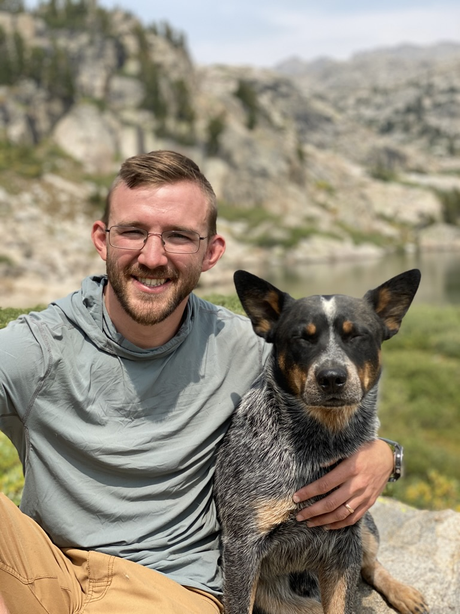

About Marcus
My name is Marcus Hartwig. I am based in Seattle, WA, but I am often traveling throughout the States, Switzerland and Hong Kong. I am both a husband and father. My family is the joy of my life! I have extensive experience in leadership, particularly in the context of wilderness expeditions. I have led trips ranging from 3 to 60 days all around the United States. I’ve recently made a career change into software development in order to further develop myself professionally as well as step into a career that keeps me closer to my family. I decided to cultivate this skill in order to build bridges between my experience as a wilderness instructor and the tech industry. I hope to one day work within a company that views the wilderness as an integral part to personal and professional development, as well as work within a team who’s culture values honesty, vulnerability and courage to push boundaries.